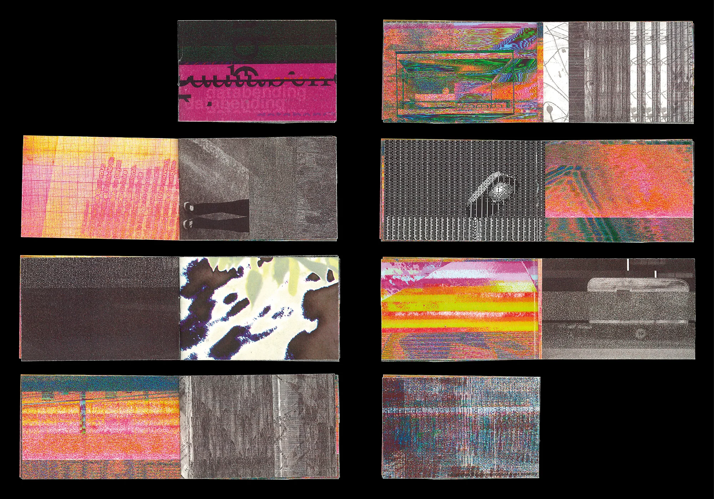
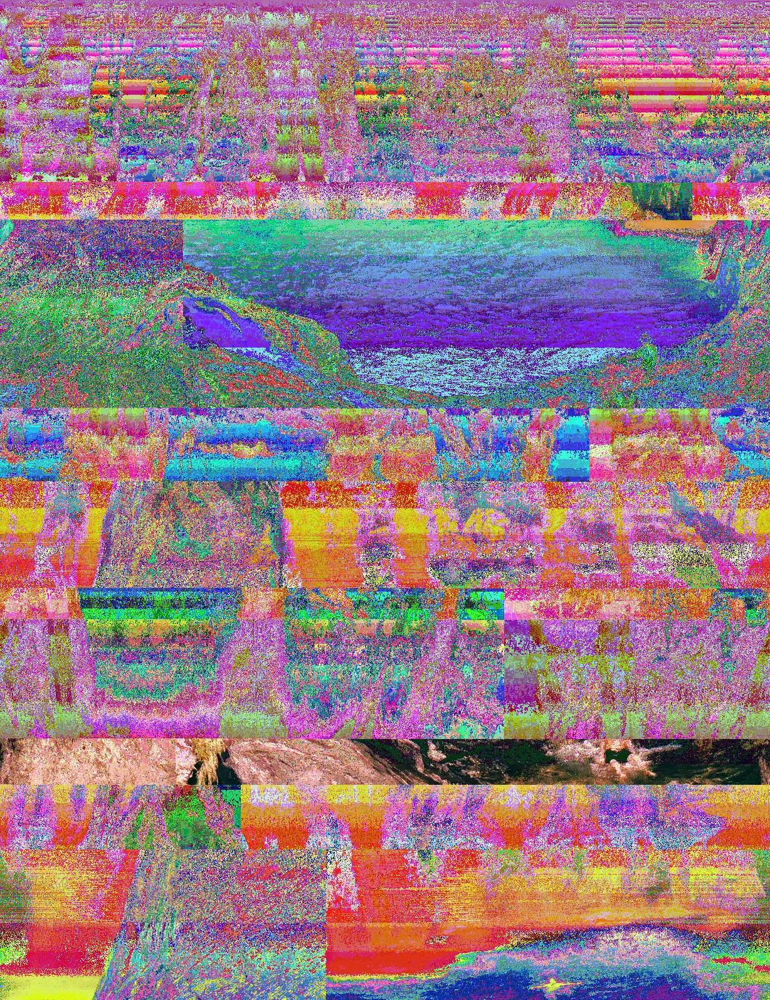
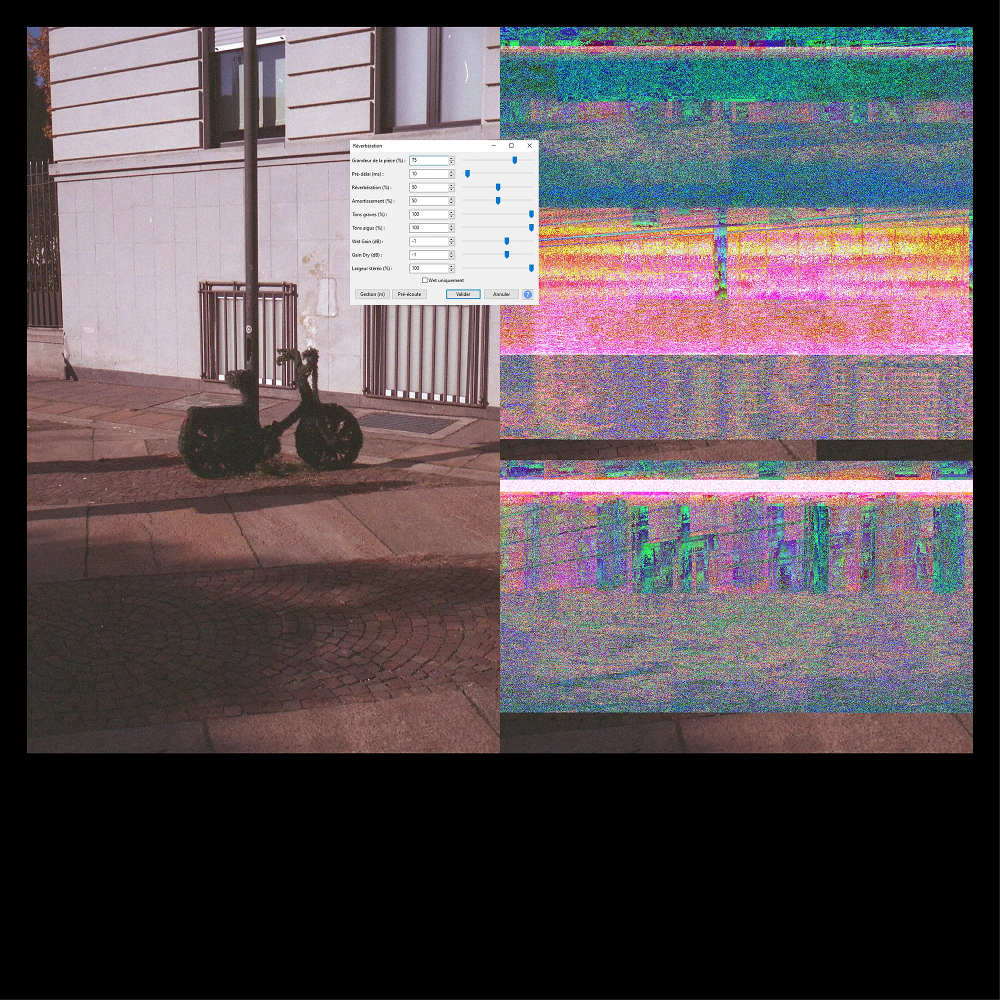

databending
Édition, 2023
Projet personnel
Compilation d’images capturées et glanées ayant subi une intervention graphique grâce à Audacity, un logiciel d’enregistrement de son.




Édition, 2023
Projet personnel
Compilation d’images capturées et glanées ayant subi une intervention graphique grâce à Audacity, un logiciel d’enregistrement de son.